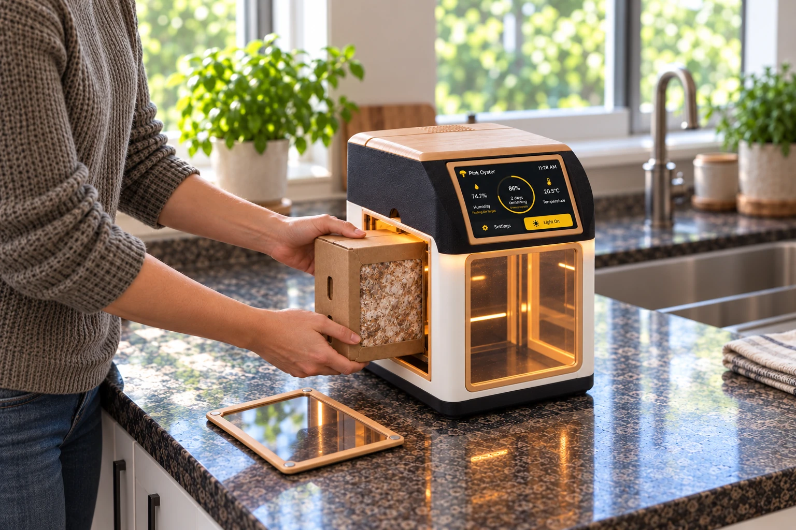

October 2026 · Mycelis
Pink oysters in the chamber.
The Mycelis prototype is growing mushrooms, with the screen and lighting in place. We're nearly ready to let people see it running in person.
See the Mycelis buildAbout Mycelis and Virelis
Mycelis is for oyster mushrooms. Virelis is for microgreens. The aim is to make growing a little food at home easier to fit into an ordinary kitchen.
Both are now physical prototypes. This site is a place to show you the machines, explain how they're meant to work, and share the progress.

What we're trying to get right
There's more to that than making a nice box. Can you get a cartridge in and out easily? Can you reach the lower tray? Is it obvious what the screen is telling you?
Those are the everyday details we're paying attention to alongside the lights, controls and growing environment. A machine that gets used needs to be easy to live with.
Tell us what you'd want from oneRecent builds
October 2026 · Mycelis
The Mycelis prototype is growing mushrooms, with the screen and lighting in place. We're nearly ready to let people see it running in person.
See the Mycelis buildNovember 2026 · Virelis
The first Virelis prototype brings the frame, lights and controls together. The tray setup and final finish still have work ahead of them.
See the Virelis buildBefore either goes on sale
We haven't announced final prices, finished dimensions or a release date. The Mycelis cartridge options and Virelis tray details also need to be settled.
We'll put those details here when they're confirmed. Until then, the prototype photos show the current hardware, and the labelled renders show the intended finish.
If you've got a practical question or want to see a prototype, we'd like to hear from you.